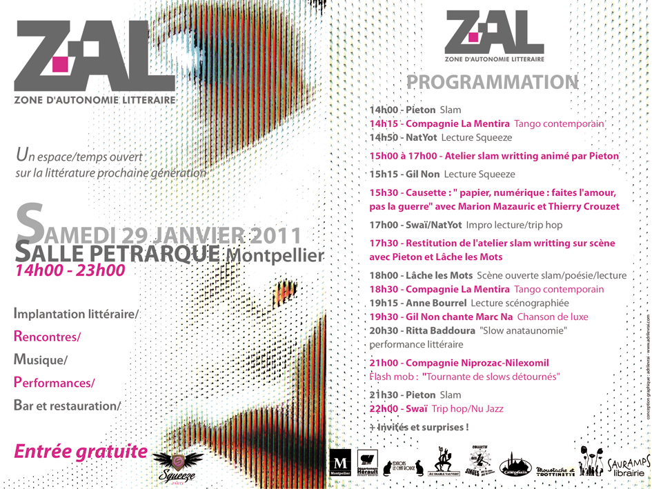

Zone d’autonomie littéraire
Un artiste est un animal pervers. Il a besoin de liberté et, en même temps, il s’adresse au public à travers des formes plus ou moins codifiées qui le contraignent. Créer, c’est se jouer de cette dichotomie. L’édition traditionnelle, avec ses livres papier, offre-t-elle encore un espace d’autonomie pour les auteurs ? N’est-elle plus seulement une contrainte ?
Si ces questions vous intéressent, nous en parlerons le 29 janvier à Montpellier au cours de la Zone d’Autonomie Littéraire organisée par la revue Squeeze. En tant que blogueur et auteur publie.net, je débattrai avec Marion Mazauric du Diable Vauvert.

Suite | 2011 | Sommaire | Texte publié mercredi 5 janvier 2011